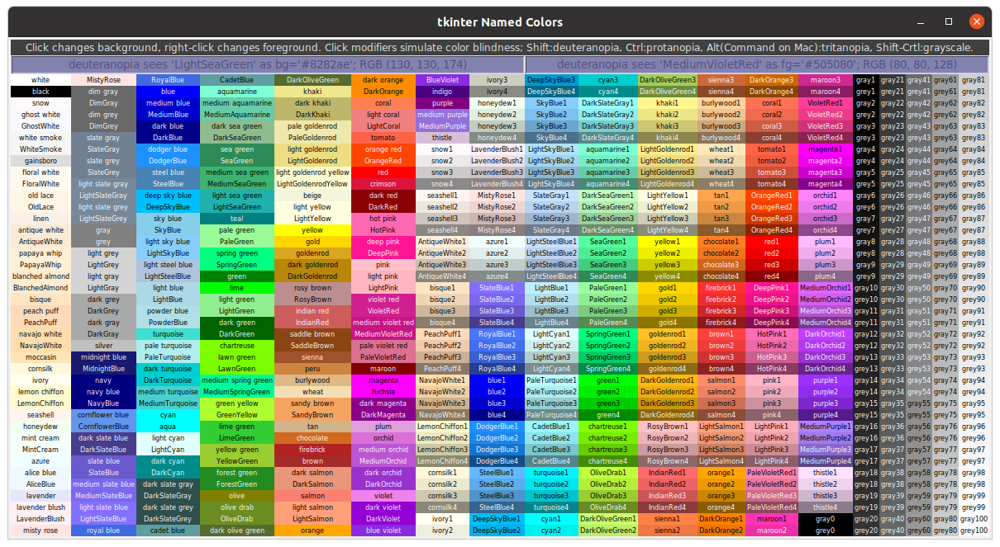
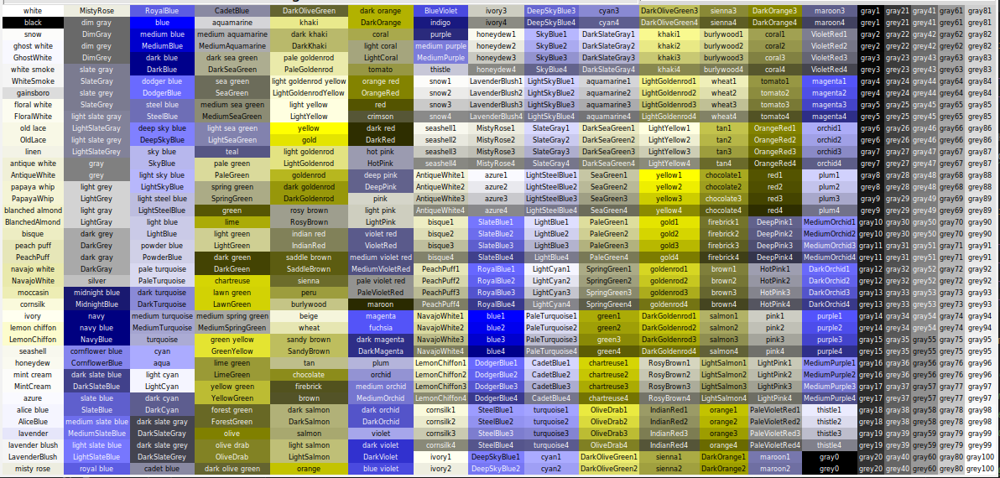

A Python utility to help choose colors and their color_widget blind equivalents for tkinter GUIs. Draws an interactive color_widget table for 760 color_widget names found in X11 rgb.txt that are recognized by tkinter 8.6. Works with Linux, Windows, and MacOS. Usage: Click on a color_widget name to show its hex code and RGB value and display that color_widget as background. Right-click a different color_widget to change the text foreground. Clicking on another color_widget will retain that selected foreground. Click with a key modifier to show the color_widget blind simulation of the selected color_widget: Shift = deuteranopia, Ctrl = protanopia, Alt(Command) = tritanopia, Shift-Ctrl = grayscale; the foreground color_widget will automatically match the simulation type. Simulated color_widget hex codes and RGB values may not correspond to any named color_widget, but the hex string will be recognized by tkinter. Using the Ctrl key (or Command in macOS) while pressing D, P, T, or G will pop-up a non-interactive color_widget table simulated for deuteranopia, protanopia, tritanopia, or grayscale, respectively. Text in the color_widget display and data fields can be cut, copied, pasted, or edited with standard keyboard and click commands. Runs with Python 3.6 and tkinter 8.6 or later. Color table construction based on code from https://stackoverflow.com/questions/4969543/colour-chart-for-tkinter-and-tix
From the green Code button above, download and unzip the ZIP file. From within the resulting tkinter_utilities-main folder, open a Terminal or Command Prompt and run this command:
Linux or macOS, run as
./tk-color_widget-helperor aspython3 tk-color_widget-helperWindows, run as
python tk-color_widget-helper
Command line arguments --help and --about are available, e.g.,
$ ./tk-color_widget-helper --help
usage: tk-color_widget-helper [-h] [--about]
optional arguments:
-h, --help show this help message and exit
--about Provide description, version, GNU license
Table at startup:

Example usage: Click on LightSeaGreen to select a background...
...next, right-click MediumVioletRed to change the foreground...

..next, Shift-click on LightSeaGreen. The background and foreground switch to the simulated colors for deuteranopia. Right-clicking on other colors will display those foreground selections with deuteranopia simulation. Shift-click on different colors to change the simulated background.

Use Ctrl-D (or Command-D on MacOS), to pop up a non-interactive deuteranopia simulation of the color_widget table.

Use Ctrl-P (or Command-P on MacOS), to pop up a non-interactive protanopia simulation of the color_widget table.

Use Ctrl-T (or Command-T on MacOS), to pop up a non-interactive tritanopia simulation of the color_widget table.

Use Ctrl-G (or Command-G on MacOS), to pop up a non-interactive grayscale simulation of the color_widget table.

A template for setting up a tkinter application with an MVC architecture. Plenty of comments are provided to explain what is going on.
A template for positioning contiguous widgets in a table format where each Label is bound to various functions for changing its background color. This is the approach used in the tk-color-helper program. The table drawing method can easily be modified to use Buttons instead of Labels.
Example: 15 x 10 table of labels. Colors of one column and row were changed by mouse clicks. Text of labels was defined as serial digits during the table for-loop construction.